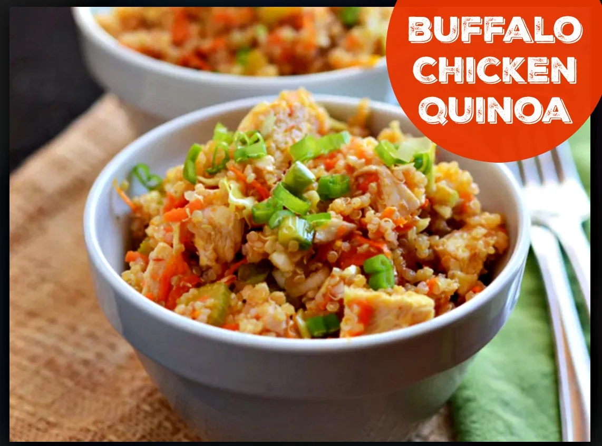

Buffalo Chicken Quinoa

Description
A simple yet delicious recipe that incorporates one of the greatest food groups on this earth: Buffalo Chicken. Guilt free if you don't use ranch or too much blue cheese!
Ingredients
- 1 cup quinoa
- 2 cups water
- 3/4 lb. chicken breast, cut into bite-sie pieces
- 1 tbsp. olive oil
- 1/2 cup hot sauce
- 1 cup cabbage/carrot slaw mix
- 1 cup broccoli florets, steamed slightly
- 4 green onions, sliced
- blue cheese crumbles
Steps
- In a medium saucepan, bring the quinoa to a boil in two cups of water
- Cover quinoa and simmer on low for 20 minutes
- Remove and fluff
- Meanwhile, brown chicken pieces in olive oil in a skillet
- Add hot sauce to coat
- Add quinoa, cabbage/slaw mix, broccoli, and green onions to skillet
- Stir until heated through
- Top with green onions as a garnish and blue cheese crumbles
- Serve warm